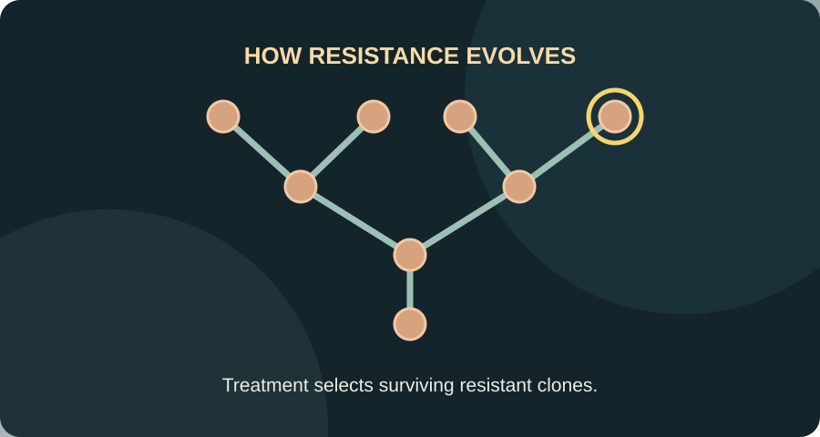

The cancer learns to escape
Jerry Mayfield, a Louisiana policeman with CML, initially responds well to Gleevec. Later his leukemia returns. The story reveals a familiar problem in a molecularly targeted form: malignant cells can develop changes that prevent a drug from working. A medicine may block one version of a protein while a mutated version continues sending growth signals.
The Red Queen's race
The title refers to the Red Queen in Through the Looking-Glass: one must keep running to remain in place. Cancer therapy can face a similar evolutionary struggle. Every successful treatment changes the environment inside a tumor, favoring clones that can survive it. Researchers must identify new vulnerabilities and develop new inhibitors as resistance emerges.
New drugs can overcome some resistance
Additional targeted medicines are developed to inhibit altered forms of the same signaling system, allowing some patients to regain disease control. The lesson is not that targeted therapy has failed. It is that cancer is an evolving population, and successful treatment may require monitoring, adapting, and combining strategies across time.

The biological and social challenges
Mukherjee distinguishes two struggles. One concerns mutations, growth pathways, and drug resistance. The other concerns human habits, access to care, exposure to carcinogens, inequality, smoking, and prevention. Science can design powerful drugs, but it cannot automatically solve the social conditions that allow cancer risk and suffering to persist.